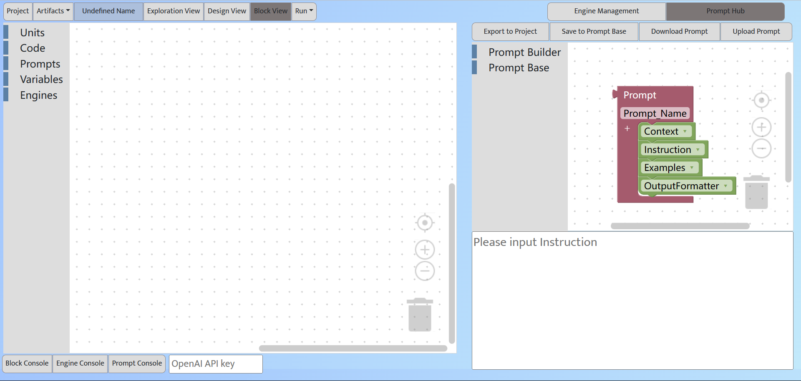

Prompt Hub
The hub of your prompt assets
Prompt Hub: Block tabs (left), prompt block editor (right), prompt text view (bottom)
Similar to the value of code in traditional software, prompts are the core assets in the AI chain paradigm, which can be reused across AI chain projects. Therefore, our Sapper IDE supports a Prompt Hub that is independent of project management. Prompt Hub has two tabs: Prompt Builder and Prompt Base.
In the Prompt Builder tab, the user can manually create new prompts. They can also drag an existing prompt from the Prompt Base tab to the prompt editor to edit it. Editing prompt blocks in the prompt editor is the same as editing other types of blocks in the AI chain editor.
Experienced users can directly enter or edit prompt text in the Prompt Text view at the bottom. Users can also create or edit prompts in a structured way by the four prompt aspects (Context, Instruction, Examples, and Output Formatter). Except for the Instruction, the other three aspects are optional, but are recommended to represent the prompt in a more structure form.
Clicking "Save to Prompt Base" will save the created prompts to the Prompt Base or update existing prompts in the Prompt Base. All prompts can be viewed in the Prompt Base tab. The prompts in Prompt Base can be searched and recommended in the Design view (upcoming feature).
In the Prompts tab of an AI chain project, the user clicks the "Import Prompts ..." button, which will open the Prompt Hub view. The user can then drag the prompts that the project will use from the Prompt Base tab to the prompt editor. Then, clicking the "Export to Project" button will export the selected prompts to the project. The user can change prompts used in the project in the project's Prompt Console tab, but these changes will not affect the origional prompts in the Prompt Hub.
The user can download the prompts into local files or upload local prompt files to the IDE.